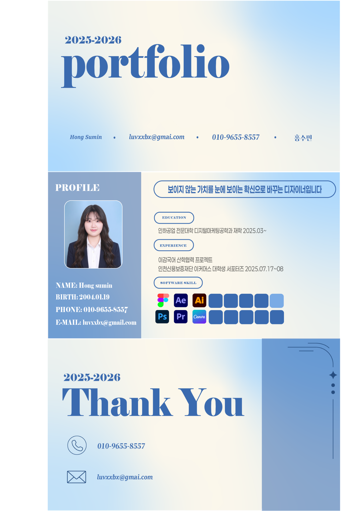
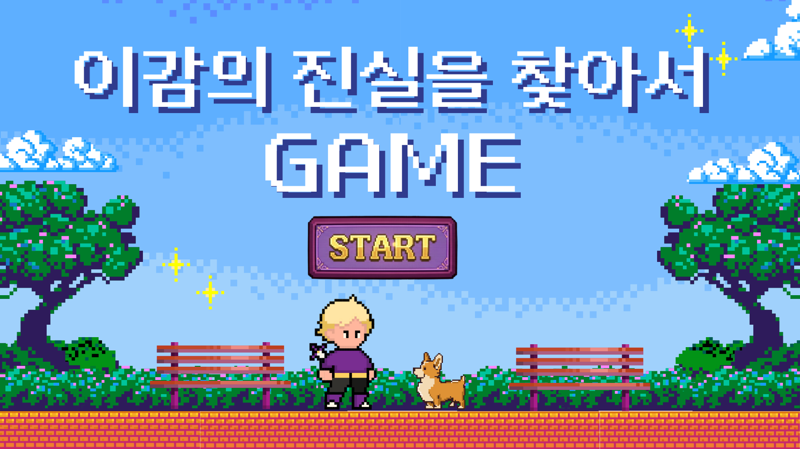

"데이터로 읽고 감각으로 그리다"
성장하는 인재


안녕하세요, 디지털 마케팅을 전공하며 논리적인 전략과 따뜻한 디자인을 연결하는 홍수민입니다.
사용자의 마음을 움직이는 콘텐츠부터 체계적인 아카이빙 솔루션까지,
저만의 색깔로 채운 프로젝트들을 소개합니다.
감각적인 크리에이터

르무통의 브랜드 철학인 '편안함'을 시각화하기 위해 사용자 경험 중심의 페이지를 설계했습니다.
감각적인 이미지 배치와 여백의 미를 활용해 고객이 페이지를 스크롤 하는 과정 자체가 브랜드 경험이 되도록 기획했습니다.
단순히 예쁜 디자인을 넘어,
마케팅 성과로 이어지는 전략적인 비주얼 언어를 구축하는 데 집중했습니다.

유연한 커뮤니케이터
대학생 타겟의 니즈를 분석하여 매주 유용한 꿀팁 콘텐츠를 발행했습니다.
복잡한 정보를 직관적인 비주얼로 치환하는 '언어의 시각화'에 집중했으며,
사용자 피드백을 실시간으로 반영하는 유연한 소통을 통해 높은 공감과 확산을 이끌어냈습니다.
이를 통해 대중의 요구를 매력적인 콘텐츠로 제작하는 커뮤니케이션 역량을 증명했습니다.


시각적 해결사


브랜드의 교육 철학을 픽셀 아트라는 새로운 비주얼 언어로 재해석했습니다.
단순히 영상을 제작하는 것을 넘어, 브랜드가 지닌 딱딱한 이미지를 탈피하고 타겟층에게 친숙하게 다가갈 수 있는 최적의 톤앤매너를 제안했습니다.
기획 의도를 명확하게 시각화하여 브랜드의 가치를 높이는 전략적인 파트너가 되겠습니다.
연결하는 기획자
사회적 가치를 담은 프로젝트일수록 사용자의 감정적 몰입을 끌어내는 것이 중요합니다.
'포옹' 프로젝트에서는 따뜻한 컬러 팔레트와 정제된 인터페이스를 통해 유기동물에 대한 심리적 장벽을 낮추는 솔루션을 구축했습니다.
사용자의 마음을 움직이는 디자인과 논리적인 기획력으로 최선의 성과를 도출할 준비가 되어 있습니다.


성장하는 인재

공연의 감동을 데이터로 기록하고 아카이빙하는 복잡한 구조를 사용자 중심의 직관적인 UI로 구현했습니다.
사용자가 기록하는 과정 자체를 하나의 즐거운 경험으로 느낄 수 있도록 정보의 우선순위를 재배치하고 효율적인 동선을 설계했습니다.
서비스의 본질을 꿰뚫는 디자인으로 프로젝트의 완성도를 책임집니다.